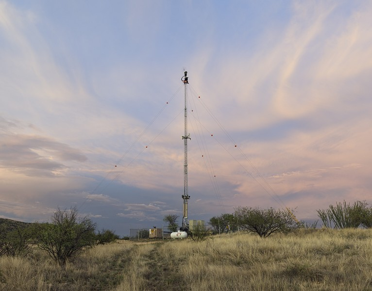
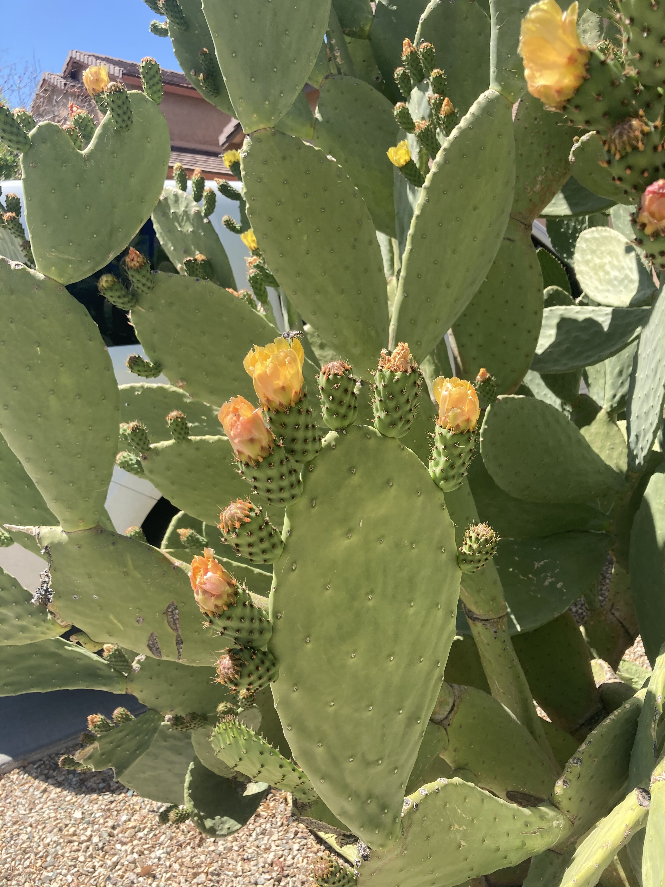

Alexis Herrera
About me
My name is Alexis Herrera and this is my website. Welcome :-)
I am a researcher, programmer, and student currently living in Ann Arbor, MI. I am currently pursuing a master's degree at the University of Michigan in information & science and technology studies. My interests are in technological mediation, surveillance, and the interplay between race and technology. I currently serve as a research assistant at the EthnoLab, and I was most recently a curatorial intern at the University of Michigan Museum of Art.
I previously worked with Borderlands Theater to collect oral history interviews for their ongoing Barrio Stories. Before all that, I worked as a software engineer at Medium developing web infrastructures.
I graduated from the University of Pennsylvania in 2019 with a BA in sociology. For a CV, please email me at haleeexis (at) gmail (dot) com.
Pics
 Me at the aquarium in San Francisco. 2021.
Me at the aquarium in San Francisco. 2021.
Contingent Perimeters

Ground Scanning Radar, David
Taylor. 2007.
Contingent Perimeters is a digital exhibition I curated in collaboration with the University of Michigan of Art.
This exhibition brings together six incredible artists—Yaritza Flores Bustos, Gloria Martinez-Granados, Hillary Mushkin, M. Jenea Sanchez, David Taylor, and Alex Turner—that challenge our understanding of the U.S.-Mexico border. Collectively, they re-conceptualize the border as a contingent and reticular formation.
Barrio Stories

Cactus, West Side of Tucson, AZ. 2021.
In the summer of 2021, I worked alongside Marc Pinate at Borderlands Theater to collect oral histories for their ongoing Barrio Stories project. This project aims to recuperate and preserve the histories of Mexican-American barrios in Southern Arizona. The oral histories collected will inform the playwrighting process for a series of theatrical performances set to come out early 2022.
Spiky head
Froggie head
bae